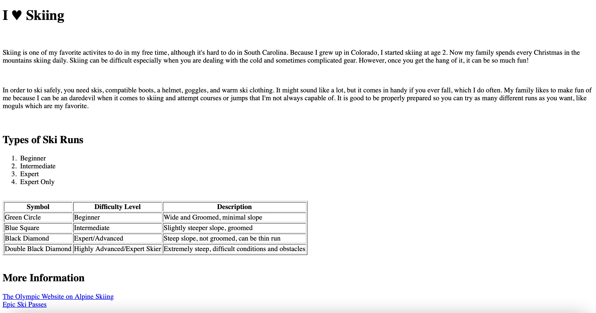
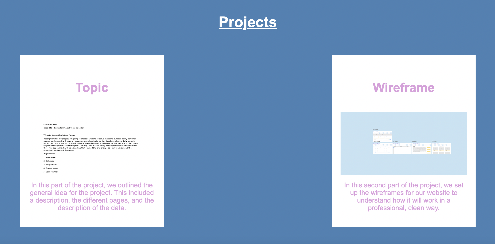

Assignment 1 - Basic HTML
In this assignment, we focused on learning the basics of HTML and putting it into practice on a webpage about a topic without the style elements.
Assignment 2 - Basic CSS

We used CSS in conjunction with HTML to create a more visually appealing webpage with a navigation bar that looked "prettier".
Assignment 3 - Page Layout

This assignment introduced our class to the applications of flexbox in web design and making webpages more user friendly/visually interesting.
Assignment 4 - Main Page CSS

This assignment allowed us to re-style our main page to look better and showcase more parts of each assignment we have completed thus far.
Assignment 5 - Recreate CSS Page

In this assignment, we practiced recreating a given webpage on our own. This helped to further our css knowledge and understand real-life webdesign.
Assignment 6 - Main Page Projects Section
This assignment had us add to our main page to include a "Projects" section so all our content created in this class is on our main page, including for the project.